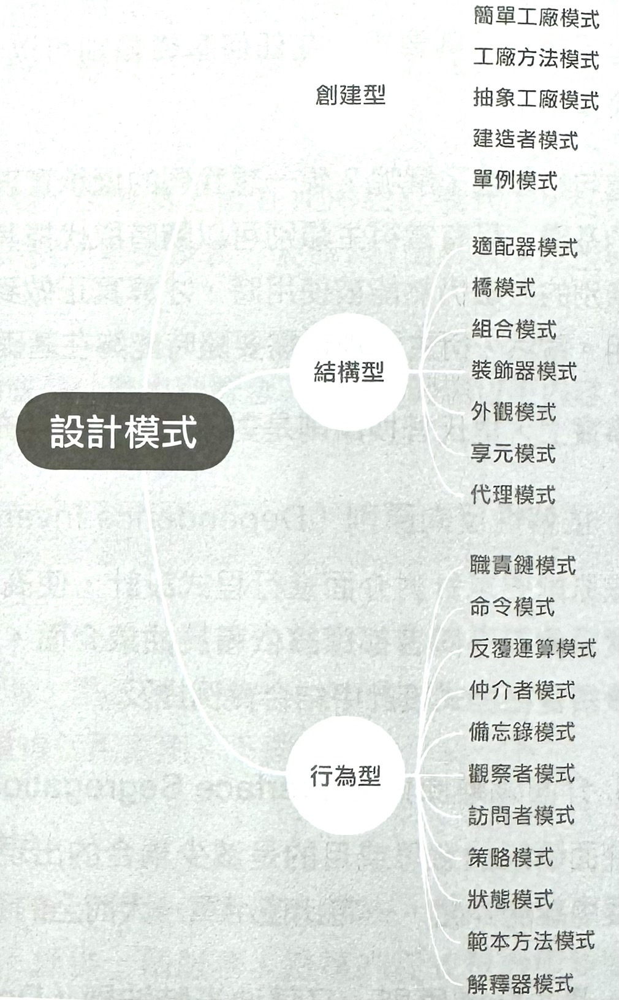

1-5-1 設計模式導論
維基百科中對設計模式的定義是,在軟體 工程中,設計模式(Design Patten)是對軟體設計中普遍存在(反覆出現)的各種問題所提出的解決方案。這個術語是由埃裡希·伽瑪(Erich Gamma)等人在 20世紀90年代從建築設計領域引用電腦科學中的。設計模式並不是直接用完成程式的撰寫的,而是描述在各種不同情況下要怎麼解決問題的一種方案。
為什麼說這是一個一言難的概念呢?首先,從設計模式的定義中可以看出這是一套理論,一般來說不會在面試 中提出「請你解釋一下設計模式」「你會多少種設計模式」這種問題。一般認為設計模式有23種,這23種設計模式的本質是物件導向設計原則的實際運用,是對類別的封裝性、繼承性和多形性,以及類別的連結關係和組合關 係的歸納應用。
設計模式是一種經驗歸納,是套「兵法」,一共包含了23個策略,最後目的是獲得更好的程式重用性、可讀性、可用性、可維護性。
設計模式原則
其包含6大原則
- 開閉原則
- 里氏替換原則
- 依賴性反向原則
- 介面隔離原則
- 最小知道原則
- 合重複使用原則
1.開閉原則(Open Close Principle)
這裡的開是指對擴充開放,閉是指對修改關閉。想像一下,現在有一套實現,提供一個服務,這樣的程式需要隨時進行擴充、隨時支援協力廠商的自訂設定,但是不能去修改已有的實現程式。
現在做了一個 UI 元件,業務方在使用時顯然不能夠修改我們的程式,但是仍然可以對程式進行擴充。再舉例來說,在實現一個編輯器時,著名的 Draft.js 函數庫提供了靈活的外掛程式機制,可以實現熱抽換效果,使整個程式具有良好的擴充性,易於維護合升級。Redux 函數庫、Koa 函數庫等基本所有的函數庫中都有開閉原則的表現。
2.里氏替换原則(Liskov Substitution Principle)
物件導向設計的基本原則:在任何基礎類別可以發揮作用的地方,子類別一定可以發揮作用。
里氏替換原則就是繼承重複使用的基礎。只有衍生類別可以隨時取代掉其基礎類別,且功能不被破壞，基礎類別的方法仍然能被使用時，才算真正做到了繼承,繼承才能真正實現重複使用。當然,衍生類別也需要隨時能夠在基礎類別的基礎上增加新行為。
事實上,里氏替換原則是對開閉原則的補充。
3.依賴性反向原則(Dependence Inversion Principle)
該原則要求針對介面進行程式設計,使高層次的模組不依賴低層次模組的實現細節,兩者都應該依賴於抽象介面。
4.介面隔離原則(Interface Segregation Principle)
介面隔離的意思或目的是減少耦合的出現。在大型軟體架構中,使用多個相互隔離的介面,一定比使用單一大而全的介面要好。
5.最少知道原則,又稱迪米特法則(Demeter Principle)
一個系統的功能模組應該大幅地不知曉其他模組的出現,減少感知,模組之間應相對獨立。
6.合成重複使用原則(Composite Reuse Principle)
合成重複使用原則是指,盡量使用合成/聚合的方式,而非使用繼承。以原型為基礎的繼承在很多方面都優於以類別為基礎的繼承,原因在於以原型為基礎的繼承模式表現了可組合性。組合是非常優秀的程式設計思想,這點在函數式程式設計中大幅地獲得了印證。
設計模式的3大類和23種策略
所有的設計模式大致上 可以歸結為3大類:建立型、 結構型、行為型
建立型(Creational Pattern)
建立型的5種設計模式提供了 更加靈活的物件建立方式,同 時可以隱藏建立的實際邏輯。 與直接使用 new 運算子產生 實體物件相比,這些模式具有更 強的靈活性及可訂製性。
結構型(Structural Pattern)
結構型的7種設計模式關注類 別和物件的組合,結合繼承的 概念,這些設計模式能使物件 具有更加靈活的功能設定。
行為型(Behavioral Pattern)
行為型的11種式聚焦於物件和類別之間的通訊,這是建置大型程式架構必不可少的部分。
所有類型種式如下圖列舉
